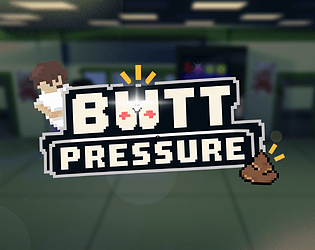

Delvin Susilo · Game Design Case Study
Butt Pressure

Gameplay

Game Description
Butt Pressure is a comedic adventure about Udin, a student who urgently needs to find a toilet. Players explore the school, overcome obstacles, and complete minigames while a decreasing Poop Meter keeps the journey under pressure.
Core Loop
Explore the School → Overcome an Obstacle → Continue Toward the Toilet
Search for a route through the school, encounter challenges that interrupt progress, and complete them to keep moving. The remaining Poop Meter gives each delay a cost as the player approaches the final objective.
Personal Contributions
I designed the minigames and the Poop Meter system, connecting individual challenges to the pressure of reaching the toilet in time. I also supported asset selection by sourcing fonts and sound effects to complement the game’s comedic tone.
Design Breakdown — Urgency and Pacing
The Poop Meter connects exploration and minigames to a shared objective. Time spent searching for a route or completing a challenge reduces the player’s remaining margin for reaching the toilet.
The pacing goal is to support both urgency and comedy. Obstacles delay a simple, understandable objective, making everyday school situations feel more stressful in the context of Udin’s predicament. The relationship between travel time, challenge duration, and the meter is the main area to examine when discussing the game’s balancing.